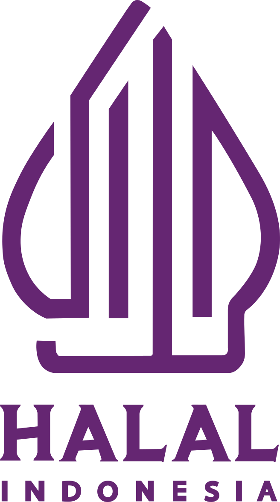
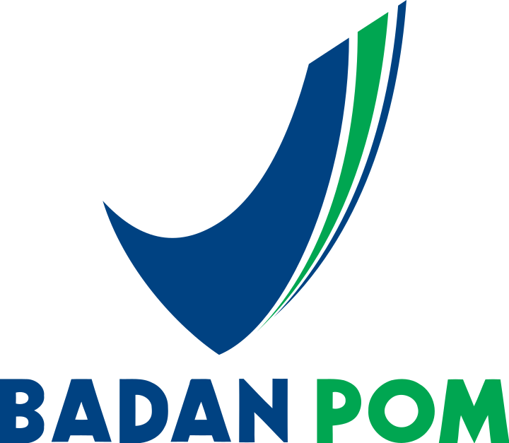

We Support Your Herbal Business
Perusahaan pengolahan bahan baku herbal dan produksi obat bahan alam dengan standar mutu yang terjaga.



Perusahaan Herbal Modern


CV Massusi Herbal Utama merupakan perusahaan yang bergerak di bidang pengolahan bahan baku herbal dan produksi obat bahan alam yang berlokasi di Wonogiri, Jawa Tengah.
Dengan dukungan fasilitas produksi sesuai standar Cara Pembuatan Obat Tradisional yang Baik (CPOTB), perusahaan berkomitmen menghasilkan produk herbal yang aman, bermutu, dan bermanfaat bagi masyarakat. Melalui pengendalian mutu yang konsisten, sumber daya manusia yang kompeten, serta semangat inovasi berkelanjutan, CV Massusi Herbal Utama terus berupaya menjadi mitra terpercaya dalam pengembangan dan produksi obat bahan alam di Indonesia.
Komitmen Kami
Kualitas Terjamin
Memilih bahan herbal yang baik dan diproses dengan standar yang terjaga.
Melayani dengan Tulus
Memberikan informasi dan pelayanan yang ramah serta responsif.
Menjaga Kepercayaan Pelanggan
Mengedepankan kejujuran, keamanan produk, dan kepuasan pelanggan dalam setiap layanan.
Arah Perusahaan
Visi
Menjadi perusahaan unggul dalam pengembangan obat bahan alam dengan bahan baku herbal yang memberikan manfaat berkelanjutan bagi masyarakat dan lingkungan.
Misi
- Menghasilkan produk obat bahan alam dengan bahan baku herbal yang berkualitas, aman, dan bermanfaat.
- Menerapkan standar mutu dan CPOTB dalam seluruh proses produksi.
- Mendorong inovasi melalui penelitian dan kemitraan yang berkelanjutan.
- Memberikan edukasi mengenai pemanfaatan obat bahan alam yang aman dan tepat.
Produk Herbal Unggulan

⭐⭐⭐⭐⭐

⭐⭐⭐⭐⭐

⭐⭐⭐⭐⭐

⭐⭐⭐⭐⭐

⭐⭐⭐⭐⭐

⭐⭐⭐⭐⭐

⭐⭐⭐⭐⭐

⭐⭐⭐⭐⭐
Apa Kata Mereka?
Kepuasan pelanggan adalah prioritas kami. Berikut beberapa ulasan dari mitra dan pelanggan yang telah mempercayakan kebutuhan herbal kepada CV Massusi Herbal Utama.
Maklon di CV Massusi sangat memuaskan. Kita bisa dibantu dari formulasi herbal, bentuk sediaan maupun produk knowledge nya. Bahkan dibuatkan desain lagi. Terima kasih Massusi semoga maju dan sukses.
dr. Budi
PemaklonKami sudah beberapa kali bekerja sama sebagai supplier bahan baku herbal. Kualitas konsisten dan selalu tepat waktu.
Dewi Lestari
Mitra BisnisProses produksi terlihat profesional dan mengikuti standar yang baik. Sangat puas dengan hasil produk yang diterima.
Rina Maharani
CustomerKeunggulan Massusi Herbal Utama
Menggunakan bahan baku yang dipilih dengan cermat untuk menjaga kualitas dan konsistensi produk.
Seluruh proses produksi dilaksanakan sesuai standar mutu dan prinsip Cara Pembuatan Obat Tradisional yang Baik (CPOTB).
Setiap produk dikembangkan dengan memperhatikan aspek keamanan, kualitas, dan manfaat bagi pengguna.
Menjalankan kegiatan usaha yang bertanggung jawab dengan memperhatikan aspek keberlanjutan dan kelestarian lingkungan.
Terus melakukan pengembangan dan penyempurnaan produk melalui penelitian serta kolaborasi dengan berbagai pihak terkait.
Siap Mengembangkan Produk Herbal Anda?
Hubungi tim kami untuk konsultasi dan kerja sama.
Hubungi Sekarang